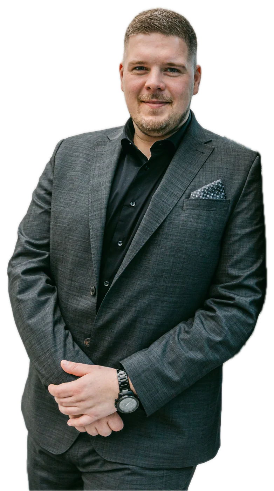
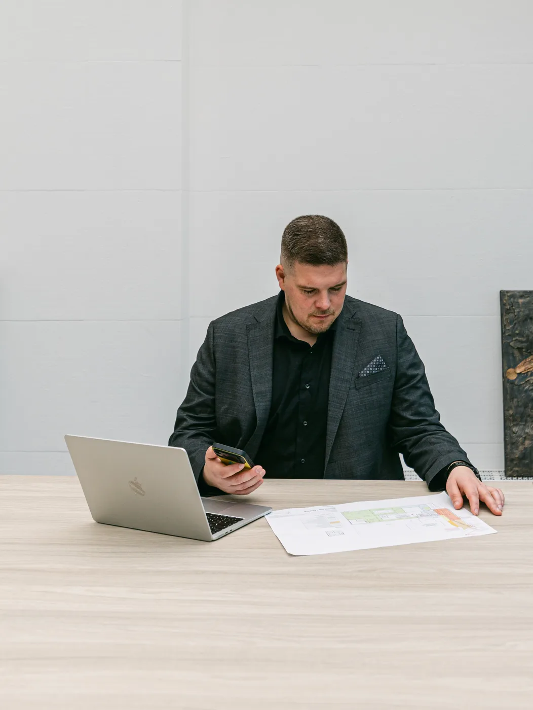
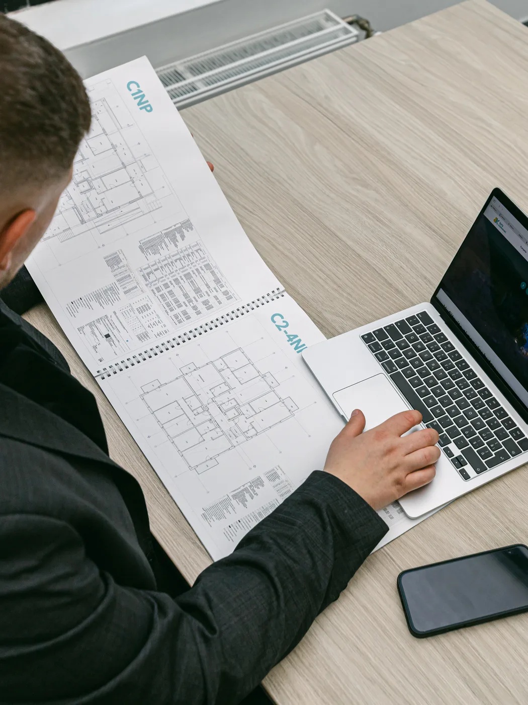

David Otajovič
Volám sa David Otajovič. Som realitný maklér kancelárie Andel&Zachar s.r.o. a pôsobím predovšetkým v lokalitách Trnava a Voderady (Trnavský kraj).

Zameriavam sa na rodinné domy. V súčasnosti mám v ponuke 4 nehnuteľnosti.
Predaj alebo kúpa nehnuteľnosti je rozhodnutie na roky. Preto odo mňa dostanete najprv poctivý odhad ceny a jasný plán, a až potom inzerát. Ozvať sa môžete kedykoľvek, najrýchlejšie cez WhatsApp.
- V ponuke
- 4 nehnuteľností
- Lokality
- Trnava, Voderady
- Zameranie
- Rodinné domy
- Kancelária
- Andel&Zachar s.r.o.


Čo hovoria klienti
Skutočné hodnotenia od ľudí, ktorým som pomohol predať alebo kúpiť nehnuteľnosť.
Sú spolupráce, na ktoré človek len tak nezabudne – a táto je presne jednou z nich. Rada by som z celého srdca poďakovala pánovi Davidovi Otajovičovi za jeho výnimočný prístup, ľudskosť a profesionalitu, ktoré cítiť v každom jednom kroku. Od prvého momentu bolo jasné, že som sa zverila do rúk človeka, ktorý svoju prácu nerobí len „dobre“, ale robí ju s nasadením, pokojom a skutočným záujmom o klienta. Vždy bol ochotný všetko trpezlivo vysvetliť, reagoval promptne a aj v situáciách, ktoré by pre iných mohli byť stresujúce, pôsobil veľmi isto a s nadhľadom. Skutočne, ak hľadáte makléra, ktorý je nielen profesionál, ale aj človek, na ktorého sa môžete kedykoľvek obrátiť a spoľahnúť, pána Otajoviča môžem s čistým svedomím odporučiť. Ďakujem ešte raz – za všetko :-)
Pán Otajovič bol počas celého procesu veľmi profesionálny, spoľahlivý a ochotný pomôcť. Komunikácia bola rýchla a bezproblémová, všetko prebehlo hladko a bez stresu. Určite ho odporúčam každému, kto hľadá kvalitné realitné služby.
Veľmi rada sa podelím o svoju skúsenosť s realitnou kanceláriou Andel&Zachar, najmä s maklérom Davidom Otajovičom. Od začiatku bol veľmi milý, ochotný a profesionálny. Všetko mi trpezlivo vysvetlil, vždy si našiel čas odpovedať na moje otázky a celý proces prebehol hladko. Som veľmi vďačná za jeho pomoc a ľudský prístup. Ďakujem a určite odporúčam ďalej.
S realitným maklérom Dávidom Otajovičom máme výbornú skúsenosť. Zabezpečil pre nás kompletný predaj nehnuteľnosti od začiatku až do konca, a to úplne bez starostí. Profesionálny prístup, ochota, komunikácia aj riešenie všetkých detailov boli na výbornej úrovni. P.Otajovič všetko vybavil promptne, spoľahlivo a s maximálnou zodpovednosťou, takže celý proces prebehol hladko a bez stresu. Ďakujeme za skvelú spoluprácu a určite ho odporúčame každému, kto hľadá spoľahlivého a profesionálneho makléra.
Chcem sa poďakovať celej realitnej kancelárii Andel&Zachar za skvelú spoluprácu a komplexné služby pri predaji rodinného domu. Obzvlášť maklérovi Davidovi Otajovičovi za jeho profesionálny a ústretový prístup. Všetko vďaka nemu prebehlo bez stresu a úplne v pohode - presne tak, ako si človek želá, keď rieši takú veľkú vec, ako je predaj nehnuteľnosti. Vždy bol ochotný, milý, všetko vysvetlil, pomohol a komunikoval. Realitnú kanceláriu aj makléra Davida úprimne odporúčam každému, kto hľadá seriózneho partnera pri predaji alebo kúpe nehnuteľnosti.
Spolupracoval som na kúpe nehnuteľnosti s pánom Otajovičom z A&Z a bol som veľmi spokojný. Pán maklér mi vždy vyšiel v ústrety - či už išlo o sprístupnenie nehnuteľnosti aj cez víkend, mimo jeho pracovného času. Vždy sme sa vedeli dohodnúť, zavolať si, prípadne sa stretnúť a doriešiť všetko potrebné. Na rozdiel od maklérov, s ktorými som sa počas hľadania stretol, pán Otajovič vedel o nehnuteľnosti povedať všetko, čo som potreboval vedieť, a takisto sprístupnil dokumentáciu, pokiaľ išlo o detaily. Boli sme veľmi spokojní s prístupom makléra aj realitnej kancelárie ako takej. Takisto sme využili služby ich spoluoracovníkov v oblasti financovania a všetko sme vyriešili načas.
Obrovska vďaka velému tímu AZ Real a hlavne Dávid Otaǰovič za nadštandartný prístup, skvelé vysvetlenie , ochota a plné pracovné nasadenie :-) Mal som možnost komunikácie a výberu bytu v projekte Byty Kamenáč kde sme si svoj byt ak vybrali :-) Môžem len odporučiť :-)
Profesionálny prístup, užitočné rady, vybavenie všetkého potrebného od A po Z pri kúpe bytu, to všetko môžete od realitnej kancelárie Andel&Zachar očakávať. Som veľmi spokojná a ďakujem predovšetkým pánovi D.Otajovičovi za ochotu, ústretovosť, cenný čas a pomoc. Pre zaneprázdnenú osobu, akou som ja, bol takýto full package veľkou pomocou a určite využijem ich služby aj nabudúce. Veľké ďakujem!
Odporucame vsetkymi desiatimi, nadstandardny prozakaznicky pristup, pre pana Otajovica nic nebolo problem, vsetko vedel vybavit, obehat, vysvetlit, casovo sa prisposobit, velmi mily, sympaticky a zaroven profesionalny pristup od zaciatku komunikacie az po prevzatie domu. Urcite budem odporucat znamym a do buducna by som ziadnu inu realitnu kancelariu nezvazovala. Lepsie sluzby si ani neviem predstavit, 11 bodov z 10 👍
Top! Pán Otajovič nám zrealizoval predaj rodinneho domu absolutne komfortne, nemali sme žiadnu starosť. Patrí mu veľká vďaka. Boli sme oslobodení od všetkeho vybavovania a čo si veľmi cením, vždy správne poradil, vysvetlil a ukľudnil. Svoju prácu odviedol profesionálne, nadštandardne a so srdcom. Tešime sa na ďalšiu spoluprácu s ním.
Super prístup, poradenstvo. Odporúčam kúpu alebo predaj nehnutelnosti cez realitnú kanceláriu Andel&Zachar . David O. super práca .
Chcem poďakovať p. Otajovičovi za jeho obetavú prácu pri predaji nášho bytu a zároveň kúpe rodinného domu. Jeho osobný prístup bol vysoko profesionálny. Poradil nám vo všetkých otázkach ktoré sme na neho mali. Cítili sme sa v jeho spoločnosti veľmi, veľmi dobre. Ak sme mali nejaký problém prišiel hneď aj z riešením za čo mu veľmi ďakujeme. Bez jeho pomoci by sme určite neuskutočnili naše ciele. Ešte raz veľká vďaka za jeho profesionálny prístup ako sme už dlho nevideli
Super !!! odporučam túto kanceláriu, pán Otajovič je profesionál! ďakujeme!
Ďakujeme p. Otajovičovi za profesionálny a ľudský prístup pri predaji nášho bytu a zároveň pri kúpe domu. Vždy milý a ochotný pomôcť. Odporúčam využiť služby tejto realitnej kancelárie. Lenka
Jednoznacne top pristup,profesionalna uroven...dakujem velmi pekne
Ďakujeme krásne pánovi Otajovičovi za pomoc s kúpou nášho vysnívaného domčeka. Kúpa prebehla bez problémov vďaka profesionálnemu prístupu pána Davida, ktorý nám vždy všetko ochotne vysvetlil. Určite odporúčame každému. :)
Časté otázky
Na čo sa pýtate najčastejšie, skôr než sa stretneme.
Koľko stojí odhad ceny nehnuteľnosti?
Odhad trhovej ceny vychádza z aktuálnych ponúk a predajov v lokalite, nie z cenníkových tabuliek. Podmienky Vám poviem pri prvom telefonáte.
Ako prebieha predaj nehnuteľnosti?
Najprv obhliadka a odhad ceny, potom príprava prezentácie (fotografie, popis, inzercia), obhliadky so záujemcami, rezervačná zmluva, kúpna zmluva, návrh na vklad do katastra a odovzdanie nehnuteľnosti. O každom kroku viete vopred.
Ako sa dohodneme najrýchlejšie?
Najrýchlejšie cez WhatsApp alebo telefón. Termín stretnutia alebo obhliadky dohodneme podľa Vás.